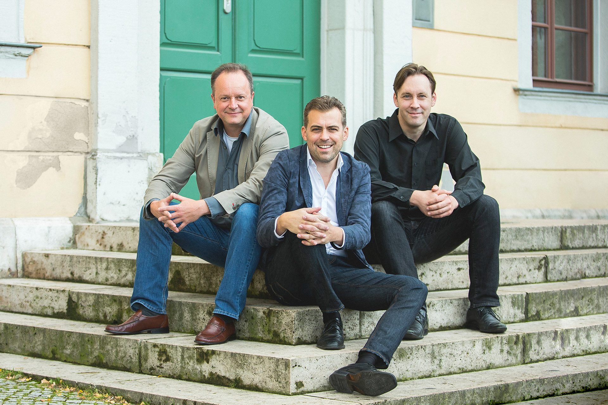
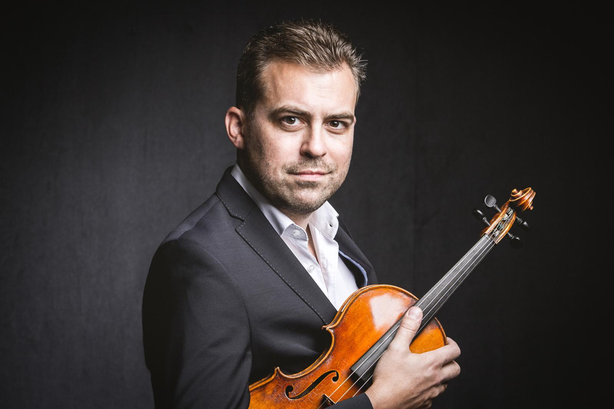
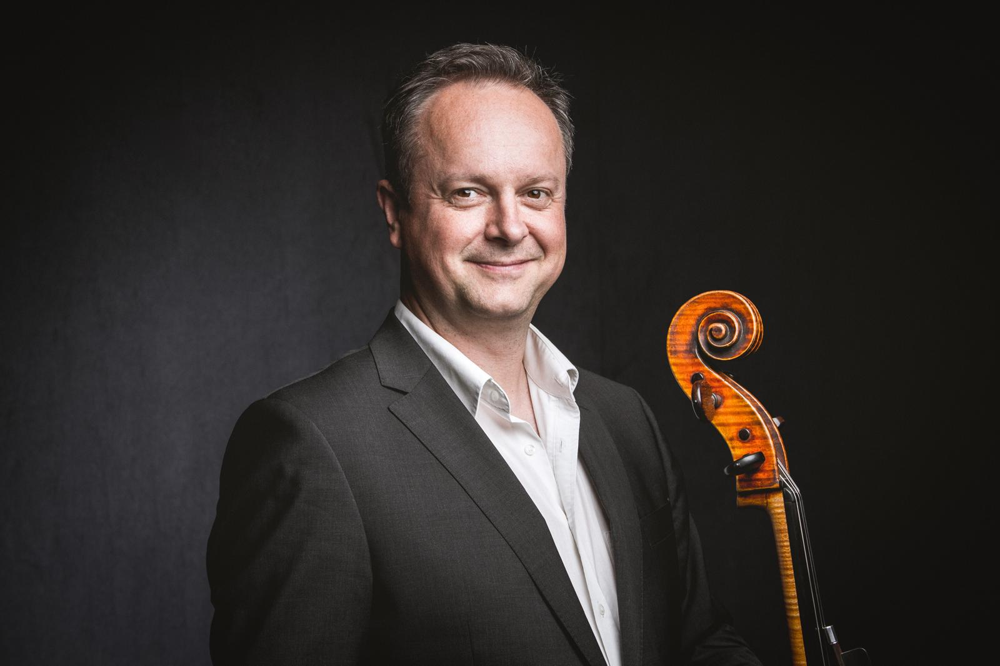
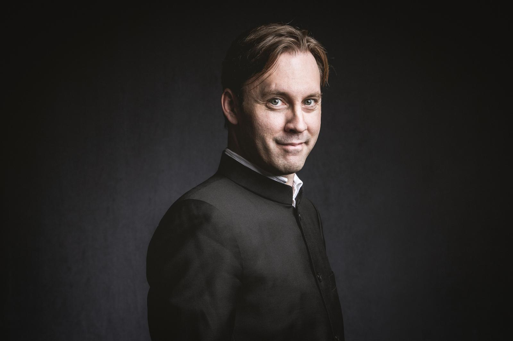

Since its founding in 2014, the Phaeton Piano Trio has earned an outstanding reputation on the international concert stage. The three longtime friends share a remarkable musical rapport, combining effortless virtuosity and an almost instinctive understanding with an interpretive freedom that makes each performance a unique musical experience.
The Phaeton Piano Trio performs extensively throughout Europe, North and South America, and Asia. Its annual tours of the United States and Canada are a cornerstone of its international concert schedule, bringing the ensemble to prestigious concert series in cities such as New York, Washington, D.C., and Boston.
The trio’s exceptionally wide-ranging repertoire spans the great masterpieces of the Classical and Romantic eras through contemporary music. A particular passion is the discovery of compelling works beyond the established canon. Compositions by Amanda Maier, Franz Berwald, Heinrich Noren, and Christian Sinding share the stage with music by Camille Saint-Saëns, Wolfgang Rihm, Alfred Schnittke, and Fazıl Say. By bringing familiar masterpieces into dialogue with unexpected discoveries, the trio creates programs rich in contrast, intriguing connections, and fresh perspectives.
The lively exchange between the three musicians extends well beyond their performances. In their engaging and insightful introductions to the music, the three university professors combine scholarly expertise with personal enthusiasm and a finely tuned sense of humor. The result is a fresh and illuminating listening experience—immediate, thought-provoking, and infused with the same spirit of shared discovery that defines their music-making.
Seit seiner Gründung 2014 hat sich das Phaeton Piano Trio auf internationalen Konzertpodien einen herausragenden Ruf erworben. Das Zusammenspiel der drei langjährigen Freunde ist geprägt von virtuoser Souveränität, beinahe traumwandlerischer Verständigung und einer interpretatorischen Freiheit, die jede Aufführung zu einem unverwechselbaren musikalischen Erlebnis macht.
Das Phaeton Piano Trio ist auf europäischen Konzertpodien ebenso präsent wie in Nord- und Südamerika und Asien. Einen festen Bestandteil seiner internationalen Konzerttätigkeit bilden die jährlichen Tourneen durch die USA und Kanada, die das Ensemble regelmäßig in renommierte Konzertreihen führen – unter anderem in New York, Washington und Boston.
Sein außergewöhnlich breites Repertoire reicht von den Meisterwerken der Klassik und Romantik bis in die Gegenwart. Besondere Aufmerksamkeit gilt musikalischen Entdeckungen jenseits des gängigen Kanons: Werke von Amanda Maier, Franz Berwald, Heinrich Noren oder Christian Sinding stehen ebenso auf den Programmen wie Kompositionen von Camille Saint-Saëns, Wolfgang Rihm, Alfred Schnittke und Fazıl Say. Aus der Begegnung von Vertrautem und Unerwartetem entstehen Programme voller Kontraste, überraschender Bezüge und neuer Perspektiven.
Der lebendige Dialog der drei Musiker reicht weit über das gemeinsame Spiel hinaus: In ihren ebenso kenntnisreichen wie unterhaltsamen Werkeinführungen verbinden die drei Hochschulprofessoren musikalischen Sachverstand mit persönlicher Begeisterung und feinem Humor. So eröffnen sie ihrem Publikum neue Zugänge zur Musik – unmittelbar, anregend und mit jener Freude am gemeinsamen Entdecken, die auch ihr Musizieren auszeichnet.

Friedemann Eichhorn, who grew up in Speyer, has been a formative artistic force in international musical life for many years.
He studied with Valery Gradow in Mannheim, with Alberto Lysy at the Menuhin Academy in Gstaad, and, as a scholarship student, with Margaret Pardee at the Juilliard School in New York. His solo career has taken him to leading orchestras, including the German radio orchestras, the St. Petersburg Philharmonic, the Hong Kong Philharmonic Orchestra, the Konzerthausorchester Berlin, and the Orchestra dell’Accademia Nazionale di Santa Cecilia in Rome, working with conductors such as Christoph Eschenbach, Antonio Pappano, and Yehudi Menuhin. Numerous world premieres, including works by Fazıl Say, underline his commitment to the music of our time.
At just 31, he was appointed Professor of Violin at the Hochschule für Musik Franz Liszt Weimar. Holding a doctorate in musicology, he combines performance with music-historical research and edits scores for Henle and Schott.
Chamber music holds a special place in his artistic work: he is a founding member of both the Phaeton Piano Trio and the Gropius Quartet. As artistic director of the Kronberg Academy and the Kronberg Festival, he combines the support of young musicians with the creation of international concert projects. His playing is documented on more than 30 recordings, many of them award-winning.
Friedemann Eichhorn, aufgewachsen in Speyer, gibt dem internationalen Musikleben seit vielen Jahren prägende künstlerische Impulse.
Er studierte bei Valery Gradow in Mannheim, bei Alberto Lysy an der Menuhin Academy in Gstaad sowie als Stipendiat bei Margaret Pardee an der Juilliard School in New York. Seine solistische Tätigkeit führt ihn zu bedeutenden Orchestern, darunter deutsche Rundfunkorchester, die St. Petersburger Philharmoniker, das Hong Kong Philharmonic Orchestra, das Konzerthausorchester Berlin und das Orchestra dell’Accademia Nazionale di Santa Cecilia in Rom. Dabei arbeitete er mit Dirigenten wie Christoph Eschenbach, Antonio Pappano und Yehudi Menuhin zusammen. Zahlreiche Uraufführungen, unter anderem von Werken Fazıl Says, unterstreichen sein Engagement für die Musik unserer Zeit.
Bereits mit 31 Jahren wurde er zum Professor für Violine an der Hochschule für Musik Franz Liszt Weimar berufen. Als promovierter Musikwissenschaftler verbindet er Interpretation mit musikgeschichtlicher Forschung und gibt Notenausgaben bei Henle und Schott heraus.
Die Kammermusik nimmt einen besonderen Platz in seinem künstlerischen Wirken ein: Er ist Gründungsmitglied des Phaeton Piano Trios und des Gropius Quartetts. In seiner Funktion als künstlerischer Leiter der Kronberg Academy und des Kronberg Festivals verbindet er die Förderung junger Musiker mit der Gestaltung internationaler Konzertprojekte. Sein Spiel ist auf mehr als 30 vielfach ausgezeichneten CD-Aufnahmen dokumentiert.

Peter Hörr combines an international career as a cello soloist and chamber musician with a distinguished career as a conductor. His in-depth engagement with historically informed performance found particular expression in his complete recording of all of Ludwig van Beethoven’s works for cello and piano on original period instruments, made around the Beethoven anniversary in 2020.
He studied with Heinrich Schiff at the Musik-Akademie Basel and was a prizewinner at the International Cello Competition in Scheveningen in 1989. His concert career has taken him to major halls and renowned festivals worldwide, including Lincoln Center New York, the Concertgebouw Amsterdam, the Berliner Philharmonie, Wigmore Hall London, Lucerne Festival and Suntory Hall Tokyo.
At just 23, he was appointed Professor of Cello at what is today the Bern University of the Arts. He is now Professor of Cello and String Chamber Music at the University of Music and Theatre “Felix Mendelssohn Bartholdy” Leipzig.
As Artistic Director and Principal Conductor of the Hofkapelle Weimar, he set distinctive accents in the interpretation of Romantic orchestral repertoire on period instruments.
His discography comprises more than 30 solo and chamber music recordings, many of them award-winning. In 2010 he received an ECHO Klassik as soloist with orchestra.
Chamber music is a further focus of his artistic work. As a founding member of the Mozart Piano Quartet and the Phaeton Piano Trio, he performs regularly in Europe, North and South America, and Asia.
Peter Hörr verbindet eine internationale Karriere als Cellosolist und Kammermusiker mit einer profilierten Tätigkeit als Dirigent. Seine intensive Auseinandersetzung mit historischer Aufführungspraxis fand besonderen Ausdruck in der Gesamteinspielung sämtlicher Werke Ludwig van Beethovens für Violoncello und Klavier auf historischen Originalinstrumenten, die im Umfeld des Beethoven-Jubiläums 2020 entstand.
Er studierte bei Heinrich Schiff an der Musik-Akademie Basel und wurde 1989 beim Internationalen Violoncellowettbewerb in Scheveningen ausgezeichnet. Seine Konzerttätigkeit führte ihn in bedeutende Säle und zu renommierten Festivals weltweit, darunter das Lincoln Center New York, das Concertgebouw Amsterdam, die Berliner Philharmonie, die Wigmore Hall London, das Lucerne Festival und die Suntory Hall Tokio.
Bereits mit 23 Jahren wurde er zum Professor für Violoncello an der heutigen Hochschule der Künste Bern berufen. Heute ist er Professor für Violoncello und Streicherkammermusik an der Hochschule für Musik und Theater „Felix Mendelssohn Bartholdy“ Leipzig.
Als Künstlerischer Leiter und Chefdirigent der Hofkapelle Weimar setzte er besondere Akzente in der Interpretation romantischer Orchesterliteratur auf historischen Instrumenten.
Seine Diskografie umfasst mehr als 30 solistische und kammermusikalische CD-Einspielungen, die vielfach ausgezeichnet wurden. 2010 erhielt er als Solist mit Orchester den ECHO Klassik.
Die Kammermusik bildet einen weiteren Schwerpunkt seines künstlerischen Wirkens. Als Gründungsmitglied des Mozart Piano Quartet und des Phaeton Piano Trio konzertiert er regelmäßig in Europa, Nord- und Südamerika sowie Asien.

Florian Uhlig studied at the Royal College of Music and the Royal Academy of Music in London. Since his orchestral debut at London’s Barbican Centre, he has performed with orchestras such as the BBC Symphony Orchestra, the Beijing Symphony Orchestra, the Deutsche Radio Philharmonie, the Dresdner Philharmonie, the Hong Kong Sinfonietta, the National Symphony Orchestra Taiwan, the Stuttgart Chamber Orchestra and the Vienna Chamber Orchestra. He has appeared at the Beethoven festivals in Bonn and Warsaw, the Casals Festival, Lorin Maazel’s Castleton Festival, the Menuhin Festival Gstaad, the Hong Kong Arts Festival, the Festspiele Mecklenburg-Vorpommern, France Musique Paris, the Schleswig-Holstein Musik Festival, the Shanghai Spring Festival and the Wiener Festwochen.
For his 19-volume complete recording of Robert Schumann’s solo piano works, Florian Uhlig received the Annual Award of the German Record Critics’ Prize (Preis der Deutschen Schallplattenkritik) in 2021, an OPUS KLASSIK in 2022 and the Robert Schumann Prize of the City of Zwickau in 2023.
Florian Uhlig is Professor of Piano at the Musikhochschule Lübeck and has been Artistic Director of the Johannesburg International Mozart Festival since 2009. In 2015 he was made an Honorary Member of the Royal Academy of Music in London.
Florian Uhlig studierte am Royal College of Music und an der Royal Academy of Music in London. Seit seinem Orchesterdebüt im Londoner Barbican Center konzertiert er mit Orchestern wie dem BBC Symphony Orchestra, dem Beijing Symphony Orchestra, der Deutschen Radio Philharmonie, der Dresdner Philharmonie, der Hong Kong Sinfonietta, dem National Symphony Orchestra Taiwan, dem Stuttgarter Kammerorchester und dem Wiener Kammerorchester. Er gastierte bei den Beethovenfestivals in Bonn und Warschau, beim Casals Festival, bei Lorin Maazels Castleton Festival, beim Menuhin Festival Gstaad, beim Hong Kong Arts Festival, bei den Festspielen Mecklenburg-Vorpommern, France Musique Paris, beim Schleswig-Holstein Musik Festival, beim Shanghai Spring Festival und den Wiener Festwochen.
Für seine 19-bändige Gesamtaufnahme der Klaviersolowerke von Robert Schumann wurde Florian Uhlig mit dem Jahrespreis der Deutschen Schallplattenkritik 2021, mit einem OPUS KLASSIK 2022 und mit dem Schumann-Preis der Stadt Zwickau 2023 ausgezeichnet.
Florian Uhlig ist Professor für Klavier an der Musikhochschule Lübeck und seit 2009 künstlerischer Leiter des Johannesburg International Mozart Festivals. 2015 wurde er zum Ehrenmitglied der Royal Academy of Music in London ernannt.